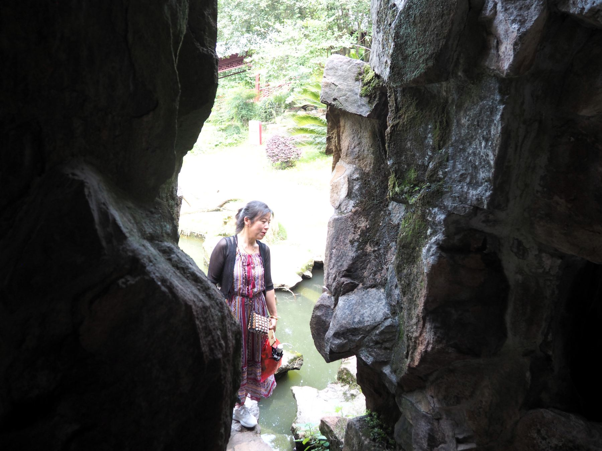
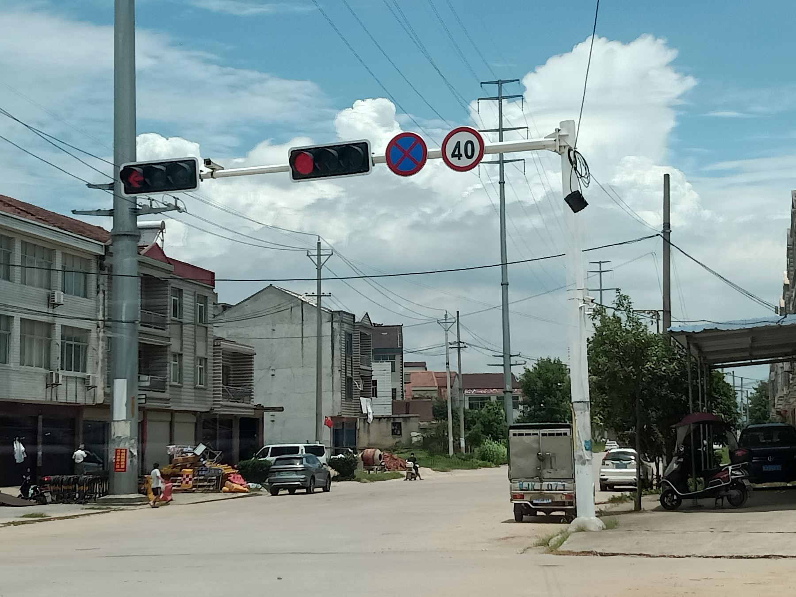

猫A cat

河与城市River and city
STREET — The City, Briefly
城市只在晚上承认自己在发光。
白天它是一堆建筑，夜里倒过来，变成水面上的一团碎光。
A city only admits it is glowing after dark. By day it is a heap of buildings; by night it turns into a handful of broken lights on water.

那晚没带相机，回来用手机拍下了水面的倒影。



旅